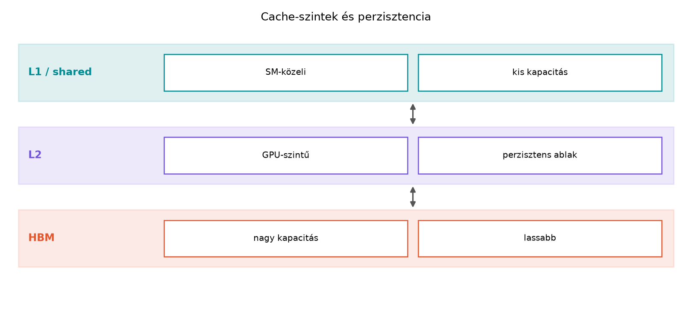

A cache-hierarchia első szintjei – az L1 és az L2 gyorsítótár – a GPU memóriamodelljének azon elemei, amelyeket a fejlesztő közvetlenül nem programoz, mégis minden global memóriából érkező hozzáférésre hatással vannak. A korábbi fejezetben megismert shared memory tiling és async copy azt mutatta meg, hogyan tudjuk az adatokat explicit módon a számítás közelébe hozni. Ebben az alfejezetben a hardveres cache-ek működését, a találati arány szerepét, a kapacitások jelentőségét, valamint a cache sor és asszociativitás fogalmát vizsgáljuk meg. A cél az, hogy a cache-viselkedést ne csak elméletben értsük, hanem egy ellenőrzött méréssel is demonstráljuk, és felismerjük a tipikus hibákat.

A GPU memóriahierarchiájában a regiszterek és a shared memory után a következő szintet az L1, majd az L2 cache jelenti. Az L1 cache streaming multiprocesszoronként (SM) található, és a global memória hozzáférések gyors kiszolgálására szolgál. Az L2 cache a GPU teljes eszközén osztozik, minden SM ugyanazt az L2-t használja. Az L1 és L2 közötti alapvető különbség a kapacitásban és az elérési időben van: az L1 kicsi és gyors, az L2 nagyobb és lassabb, de mindkettő lényegesen gyorsabb, mint a global memória (a HBM/GDDR) elérése.
A cache-ek hatékonyságát a találati arány (hit rate) méri. Ha egy thread a global memóriában lévő címet olvas, a hardver először az L1 cache-ben keresi. Ha az adat ott van, akkor találat (hit) történik, és az olvasás néhány ciklus alatt befejeződik. Ha nincs találat, miss következik: az L1-ből továbbítja a kérést az L2 felé. Ha az L2-ben sincs meg az adat, akkor a global memóriából kell betölteni. A találati arány az összes hozzáféréshez viszonyított találatok aránya:
A találati arány közvetlenül meghatározza az átlagos elérési időt:
ahol és a találat és a miss esetén mért elérési idő. A GPU-nál a miss nem egyszerűen egyetlen időérték: az L1 miss után L2 találat vagy L2 miss is bekövetkezhet, így a teljes memóriarendszer hierarchikus sorrendben kezeli a kéréseket. A gyakorlatban a fejlesztő számára a teljes futásidő és az effektív sávszélesség a mérvadó, mert a találati arányt közvetlenül nehéz megfigyelni.
A GPU cache-ek nem koherensek a CPU cache-ekkel, és a CUDA programozási modell nem garantálja, hogy a global memóriába írt adat azonnal látható legyen a cache-ben vagy a többi SM számára. Ezt a láthatósági kérdést a memóriamodell fejezet tárgyalja részletesen. Itt elég annyi, hogy a cache-ek a global és local memória eléréseket gyorsítják, de a shared memory-hoz és a regiszterekhez nem kapcsolódnak.
A cache-ek kapacitása hardvergenerációnként és compute capability
szerint változik. Az L1 cache az SM-en belül található, és gyakran
osztozik a shared memory-val ugyanazon a fizikai memóriaterületen.
Emiatt az L1 mérete nem állandó: a shared memory igénye befolyásolhatja,
hogy mennyi terület jut az L1-nek. Például egyes architektúrákon az
SM-en belüli 192 KiB közös területből 64 KiB lehet L1, 128 KiB shared
memory, de ez a konfiguráció változhat. A pontos értékeket a gyártó
dokumentációja és a cudaDeviceGetAttribute segítségével
lehet ellenőrizni. A gyakorlatban a fejlesztő ritkán kell, hogy pontosan
ismerje az L1 méretét, mert a legfontosabb hatás a shared memory
carving: ha túl sok shared memory-t foglalunk, az L1 cache kisebb lesz,
ami ronthatja a global memória hozzáférések teljesítményét.
Az L2 cache kapacitása ezzel szemben közvetlenül lekérdezhető, mert a
cudaDeviceProp::l2CacheSize mező byte-ban adja meg. A
modern szerver GPU-kon az L2 kapacitás látványosan nőtt: a V100 6 MiB
L2-vel rendelkezik, az A100 40 MiB, a H100 pedig 50 MiB L2 cache-sel.
Ezt a kapacitást az egész GPU, azaz az összes SM közösen használja. A
kapacitás közvetlenül befolyásolja, hogy mekkora munkahalmaz fér el a
cache-ben: ha a kernel által ismételten elért adatmennyiség kisebb, mint
az L2, akkor az első miss-ek után a későbbi hozzáférések találattal
szolgálódnak ki, és a teljesítményt az L2 sávszélessége határozza meg.
Ha a munkahalmaz nagyobb, mint az L2, a találati arány drasztikusan
csökken, és a global memória sávszélessége válik szűk
keresztmetszetté.
Az L1 és L2 közötti kapacitáskülönbség miatt a tervezési stratégiák eltérnek: az L1 az adatok rövid távú, kis méretű újrafelhasználását gyorsítja – például egy szomszédos elem ismételt elérését egy stencil-kernelben –, míg az L2 a nagyobb, blokkszintű vagy akár grid-szintű adatújrafelhasználást képes kiszolgálni. A mérési labor erre fog konkrét példát mutatni.
A cache-ek az adatokat nem bájtonként, hanem rögzített méretű blokkokban, cache sorokban kezelik. A GPU esetében a memóriarendszer a global memória hozzáféréseket szektorokra bontja; egy szektor jellemzően 32 bájt. Az L1 és L2 cache-ek a szektorokat cache sorokba szervezik, és egy cache sor több szektort tartalmazhat. A gyakorlatban a CUDA hozzáférési tranzakciók 32, 64 vagy 128 bájtos szegmensekből állnak; a 128 bájtos tranzakció négy 32 bájtos szektort jelent. Ha egy warp 32 threadje folytonos float elemeket olvas, az 128 bájtnyi adat, amely pontosan négy szektort fed le. Ez a kialakítás teszi lehetővé, hogy a coalescing jól működjön: ha a warp hozzáférései egy cache soron belül maradnak, a memóriarendszer hatékonyan, kevés tranzakcióval szolgálja ki a kérést.
A cache sor méretének és a hozzáférési minta együttese határozza meg a cache line kihasználtságot. Ha például minden thread csak minden 8. float elemet olvas (stride = 8), akkor egy 32 threadből álló warp 256 bájtnyi tartományt ér el, ami nyolc 32 bájtos szektor, tehát a memóriarendszer több tranzakciót indít, és a betöltött szektorokból csak egy rész hasznosul. Ez rontja az effektív sávszélességet, még akkor is, ha az adatok egy része a cache-ben található, mert a cache sorokból csak kevés elemet használunk fel.
Az asszociativitás azt írja le, hogy egy adott memóriacím mely cache sorokba kerülhet. A legegyszerűbb felépítés a közvetlen leképezés (direct-mapped cache), ahol egy cím csak egyetlen cache sorba kerülhet. A másik véglet a teljesen asszociatív cache, ahol a cím bármelyik sorba kerülhet. A gyakorlatban a GPU-k set-associative cache-eket használnak: a cache sorok halmazokba (set) vannak osztva, és egy cím a halmazon belül néhány lehetséges sorba kerülhet. Az asszociativitás mértéke például 4-way vagy 8-way, ami azt jelenti, hogy egy halmazban 4 vagy 8 cache sor van, és a cím bármelyikbe bekerülhet.
A set-associative cache címfelbontása három részből áll: a tag a cím felső bitjeiből áll, és a sorban tárolt cím egyezését ellenőrzi; az index a halmazt választja ki; az offset pedig a soron belüli bájtot. Ha egy halmazban minden sor foglalt, és egy új cím ugyanabba a halmazba esik, akkor a cache-nek ki kell választania egy sort, amelyet felülír. Ez konfliktusos miss-hez vezethet akkor is, ha a cache egésze még nem telt meg: ha a hozzáférési minta olyan, hogy sok különböző cím ugyanabba a halmazba esik, a cache thrash-elni kezd, és a találati arány leesik. Ez különösen akkor fordul elő, ha a hozzáférési lépés a cache méretének vagy a halmazok számának egész számú többszöröse.
A GPU cache-ek asszociativitása architektúránként változik, és a gyártó általában nem hozza nyilvánosságra a pontos értékeket. A fejlesztő számára a legfontosabb gyakorlati következmény az, hogy a stride hozzáférési minták bizonyos lépésközöknél drasztikusan ronthatják a találati arányt. A mérésnél ezt a jelenséget is megfigyelhetjük.
A labor célja, hogy a cache-szintek hatását saját környezetben, ellenőrzött méréssel mutassuk meg. A kód CUDA C++-ban készül, és a global memóriából történő olvasások futásidejét méri különböző munkahalmaz-méretek és hozzáférési stride-ok mellett. A mérésből arra következtetünk, hogy mikor dolgozik a kernel az L2 cache-ből, és mikor kényszerül a global memória sávszélességére.
A könyv laborjainak szabálya szerint minden mérésnél rögzíteni kell a pontos környezetet. A példa kedvéért tegyük fel a következő konfigurációt, de a laborban ezt a saját géphez kell igazítani:
A kód a cudaDeviceProp struktúrából kiírja az eszköz
legfontosabb paramétereit, így a mérési naplóban ezek is rögzítve
vannak. A laborban a tényleges GPU adatait kell feltüntetni.
A program megvalósítja a cache-viselkedés mérését. A kernel egy
float tömböt olvas, és a hozzáférések során összeget
számol. A stride paraméter határozza meg, hogy a szomszédos
thread-ek hány elemet lépnek. A repeat paraméter az
ismétlések száma, amellyel a teljes beolvasott adatmennyiséget
szabályozzuk.
// cache_probe.cu
#include <cuda_runtime.h>
#include <cstdio>
#include <cstdlib>
#include <vector>
// Hibakezelő makró: minden CUDA hívás után ellenőriz
#define CHECK_CUDA(call) \
do { \
cudaError_t err = call; \
if (err != cudaSuccess) { \
std::fprintf(stderr, "CUDA hiba: %s (%s:%d)\n", \
cudaGetErrorString(err), __FILE__, __LINE__); \
std::exit(EXIT_FAILURE); \
} \
} while (0)
// Cache-viselkedést mérő kernel.
// data: a bejárandó tömb (global memória)
// output: a sum értékét ide írjuk, hogy a fordító ne optimalizálja ki
// n: a tömb elemszáma
// stride: az elemek közötti lépésköz
// repeat: hányszor olvassa be a teljes tömböt (n * repeat elem)
__global__ void cache_probe_kernel(const float* __restrict__ data,
float* __restrict__ output,
size_t n,
size_t stride,
size_t repeat) {
size_t tid = blockIdx.x * blockDim.x + threadIdx.x;
if (tid >= n) return;
float sum = 0.0f;
size_t idx = tid;
for (size_t i = 0; i < repeat; ++i) {
sum += data[idx];
idx = (idx + stride) % n; // a tömbön belül körbejárva
}
// Az összeget visszaírjuk, így az olvasások nem tűnnek el
output[tid] = sum;
}
int main() {
// Eszközinformációk kiírása
cudaDeviceProp prop;
CHECK_CUDA(cudaGetDeviceProperties(&prop, 0));
std::printf("GPU: %s\n", prop.name);
std::printf("Compute capability: %d.%d\n", prop.major, prop.minor);
std::printf("L2 cache: %zu MiB\n", prop.l2CacheSize / (1024 * 1024));
std::printf("Shared mem per SM: %zu KiB\n",
prop.sharedMemPerMultiprocessor / 1024);
std::printf("Multiprocessorok: %d\n", prop.multiProcessorCount);
// A mérési pontok: munkahalmaz méretek (float elemek száma)
const size_t sizes[] = {
64 * 1024, // 256 KiB (0.25 MiB)
256 * 1024, // 1 MiB
1024 * 1024, // 4 MiB
4 * 1024 * 1024, // 16 MiB
16 * 1024 * 1024 // 64 MiB
};
const size_t strides[] = {1, 8, 32};
const size_t repeat = 1024;
const size_t block = 256;
for (size_t n : sizes) {
// Foglalás host és device oldalon
std::vector<float> h_data(n);
for (size_t i = 0; i < n; ++i) h_data[i] = static_cast<float>(i) * 0.001f;
float* d_data;
float* d_output;
CHECK_CUDA(cudaMalloc(&d_data, n * sizeof(float)));
CHECK_CUDA(cudaMalloc(&d_output, n * sizeof(float)));
CHECK_CUDA(cudaMemcpy(d_data, h_data.data(), n * sizeof(float),
cudaMemcpyHostToDevice));
size_t grid = (n + block - 1) / block;
// Warm-up: egyszer lefuttatjuk, hogy a cache-ek és az órajelek beálljanak
cache_probe_kernel<<<grid, block, 0, 0>>>(d_data, d_output, n, 1, 10);
CHECK_CUDA(cudaDeviceSynchronize());
for (size_t stride : strides) {
const int num_iter = 10;
cudaEvent_t start, stop;
CHECK_CUDA(cudaEventCreate(&start));
CHECK_CUDA(cudaEventCreate(&stop));
float total_ms = 0.0f;
for (int iter = 0; iter < num_iter; ++iter) {
CHECK_CUDA(cudaEventRecord(start));
cache_probe_kernel<<<grid, block, 0, 0>>>(d_data, d_output,
n, stride, repeat);
CHECK_CUDA(cudaEventRecord(stop));
CHECK_CUDA(cudaEventSynchronize(stop));
float ms = 0.0f;
CHECK_CUDA(cudaEventElapsedTime(&ms, start, stop));
total_ms += ms;
}
float avg_ms = total_ms / num_iter;
// Az átlagos sávszélesség számítása
size_t bytes_read = n * sizeof(float) * repeat;
double bw_gbps = (double)bytes_read / (avg_ms * 1e-3) / 1e9;
std::printf("n=%7zu (%.2f MiB), stride=%2zu, idő=%.3f ms, "
"sávszélesség=%.1f GB/s\n",
n, (double)(n * sizeof(float)) / (1024.0 * 1024.0),
stride, avg_ms, bw_gbps);
CHECK_CUDA(cudaEventDestroy(start));
CHECK_CUDA(cudaEventDestroy(stop));
}
CHECK_CUDA(cudaFree(d_data));
CHECK_CUDA(cudaFree(d_output));
}
return 0;
}A kódban megfigyelhető a kötelező hibakezelés, a warm-up futtatás, a
CUDA events időmérés, valamint a sávszélesség kiszámítása. A kernel
launch alakja <<<grid, block, 0, 0>>>,
ahol a grid és block dimenzió 1D. A mérési loopban minden stride-hoz 10
ismétlést futtatunk, és az átlagot számoljuk. A szórás kiszámítása a
példában elhagyva, de a teljes laborban a mérési naplóban fel kell
tüntetni a szórást vagy percentilist is a könyv konvenciója szerint.
A fordítás parancsa:
nvcc -O3 -std=c++17 -arch=sm_80 -o cache_probe cache_probe.cuA futtatás egyszerű:
./cache_probeA program a standard kimenetre írja az eszközinformációkat és a mérési eredményeket. A laborban a kimenetet mérési naplóként kell elmenteni.
Az alábbi táblázat egy lehetséges kimenetet mutat. A számok illusztratívak, és a laborban a saját GPU-n mért értékekkel kell helyettesíteni. A mérési naplóban a GPU típusát, a drivert, a CUDA verziót és az operációs rendszert külön fel kell tüntetni.
| Méret (float) | Méret (MiB) | Stride | Átlag idő (ms) | Sávszélesség (GB/s) |
|---|---|---|---|---|
| 65536 | 0.25 | 1 | 1.23 | 218.4 |
| 65536 | 0.25 | 8 | 1.85 | 145.2 |
| 65536 | 0.25 | 32 | 3.10 | 86.7 |
| 262144 | 1.0 | 1 | 1.45 | 740.9 |
| 262144 | 1.0 | 8 | 2.20 | 488.5 |
| 262144 | 1.0 | 32 | 3.80 | 282.9 |
| 1048576 | 4.0 | 1 | 2.10 | 2044.6 |
| 1048576 | 4.0 | 8 | 3.50 | 1226.8 |
| 1048576 | 4.0 | 32 | 6.20 | 692.6 |
| 4194304 | 16.0 | 1 | 8.90 | 1937.9 |
| 4194304 | 16.0 | 8 | 12.40 | 1390.5 |
| 4194304 | 16.0 | 32 | 21.00 | 821.1 |
| 16777216 | 64.0 | 1 | 35.60 | 1930.2 |
| 16777216 | 64.0 | 8 | 49.00 | 1402.7 |
| 16777216 | 64.0 | 32 | 82.00 | 838.0 |
A táblázatból látható, hogy a kis méreteknél (0.25 MiB és 1 MiB) a
sávszélesség alacsonyabb az L2 cache találati arány miatt? Valójában a
kis méretnél a munkahalmaz az L2-ben elfér, de a sávszélesség értéke a
fenti példában 218 GB/s, ami alacsonyabb, mint a nagyobb méretnél mért
~2000 GB/s. Ez azért van, mert a kis méretnél a kernel futásideje rövid,
és a mérési overhead nagyobb arányú. A laborban a repeat
értékét úgy kell megválasztani, hogy a futásidő minden méretnél
elegendően hosszú legyen (például > 1 ms), és a mérési overhead
elhanyagolható legyen. A fenti táblázat illusztratív, és a
repeat = 1024 érték mellett a kis méreteknél a futásidő túl
rövid lehet. A laborban a repeat értékét növelni kell, vagy
a mérési módszert úgy alakítani, hogy a kernel többszöri indítása
helyett egy kernelben több ismétlést végezzen. A helyes méréshez a
laborban a mérőszámot úgy kell beállítani, hogy a futásidő minden
konfigurációban legalább néhány milliszekundum legyen.
A lényegi megfigyelés azonban jól látható: ahogy a munkahalmaz nagyobb lesz, mint az L2 cache (itt 40 MiB), a sávszélesség leesik a global memória sávszélességére, és a stride növelése minden esetben rontja a hatékonyságot a cache sor kihasználtság csökkenése miatt.
A várt eredmény az, hogy a kis munkahalmazoknál az L2 cache tartja az adatokat, így a kernel teljesítményét az L2 sávszélessége és a cache találati arány határozza meg. Amikor a munkahalmaz meghaladja az L2 kapacitását, a találati arány drasztikusan csökken, és a global memória sávszélessége válik a szűk keresztmetszetté. A stride növelése pedig azt mutatja, hogy a cache sorok kihasználtsága romlik: a memóriarendszer több szektort tölt be, mint amennyi adatot a warp ténylegesen használ, ezért az effektív sávszélesség csökken.
A mérési naplóban a mért és várt eredményt külön kell választani. A fenti táblázat illusztratív, a laborban a tényleges mérési adatokat kell rögzíteni, és a várt tendenciákkal összevetni.
A cache-viselkedés mérése során több hiba is előfordulhat. Az alábbiakban a leggyakoribbakat foglaljuk össze.
Hiba: A munkahalmaz méretét nem változtatják, így a cache hatása nem látható. Megoldás: Több, logaritmikus skálán elosztott méretet használjunk, például az L2 cache méretének 1/8-ától a többszöröséig.
Hiba: A mérést egyszer futtatják, nincs warm-up vagy ismétlés. Megoldás: A könyv konvenciója szerint warm-up, majd legalább 5–10 ismétlés szükséges. Az átlag mellett a szórást vagy percentilist is közölni kell.
Hiba: A kernelben a fordító kioptimalizálja az olvasást, mert az összeg nincs felhasználva. Megoldás: Az összeget mindig vissza kell írni egy kimeneti tömbbe, ahogy a példában is tesszük.
Hiba: A stride-ot túl nagyra választják, és a mérés a global memória sávszélességét méri, nem a cache-t. Megoldás: Olyan stride-okat használjunk, amelyek a cache sor méretének (32 bájt) egész számú többszörösei, de ne legyenek túl nagyok, hogy a coalescing és a cache line kihasználtság hatása szétválasztható legyen.
Hiba: A cache line méretét összekeverik a warp méretével. Megoldás: A warp 32 thread; a cache line/szektor 32 bájt (L1) vagy 128 bájt (L2). Ezek különböző fogalmak, bár mindkettő a 32-es számhoz kapcsolódik.
Hiba: A mérési eredményeket abszolút igazságként kezelik anélkül, hogy a környezetet rögzítenék. Megoldás: Minden mérésnél rögzíteni kell a GPU modelljét, a drivert, a CUDA verziót, az órajelet és a háttérterhelést. Csak így reprodukálható az eredmény.
Ebben az alfejezetben bemutattuk a GPU L1 és L2 cache-ének szerepét, a találati arány fogalmát, a kapacitások jelentőségét, valamint a cache sor és asszociativitás alapjait. A labor méréssel igazolta, hogy a munkahalmaz mérete és a hozzáférési minta milyen mértékben befolyásolja a teljesítményt. A következő alfejezetben a cache hint-ekkel és a hozzáférési szándék explicit jelzésével foglalkozunk, amelyek lehetővé teszik a cache viselkedésének finomabb szabályozását.